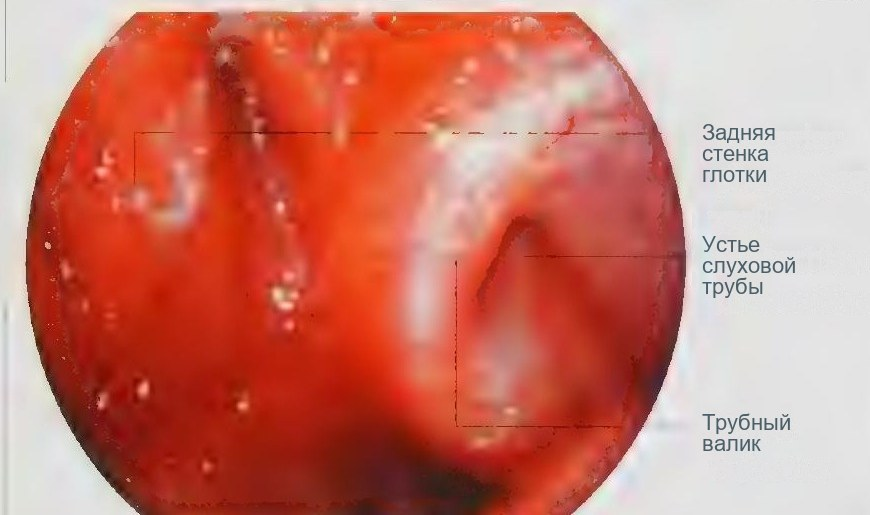
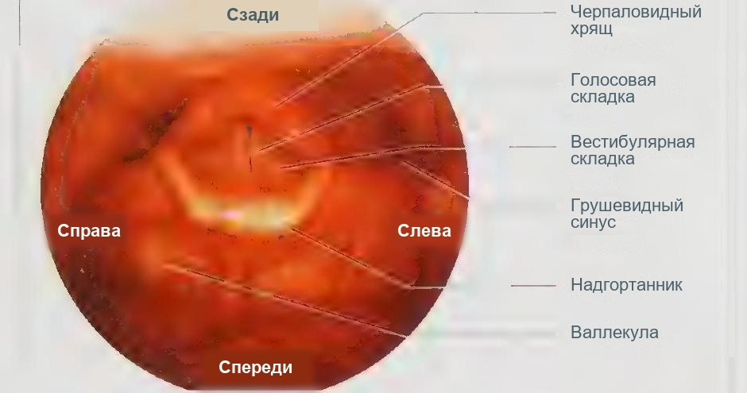

Методы исследования глотки и гортани
Осмотр полости рта и ротоглотки
Осмотр губ и полости рта входит в каждое оториноларингологическое обследование. Сначала оценивают губы, затем полость рта осматривают с помощью шпателя: врач держит его правой рукой, а левой фиксирует и поворачивает голову пациента. Съёмные зубные протезы перед осмотром необходимо удалить. Шпателем отводят губы и щёки от зубов и альвеолярного отростка, осматривают слизистую оболочку и устье протока околоушной железы, которое расположено напротив второго верхнего моляра. Когда пациент поднимает язык, видны дно полости рта и устья поднижнечелюстных протоков; боковые отделы дна осматривают, отводя язык шпателем. Большинство структур ротоглотки доступно уже при таком осмотре; нёбные миндалины оценивают по симметрии, подвижности и наличию налётов или изъязвлений.
Функциональная оценка языка и мягкого нёба
Подвижность языка проверяют, предложив пациенту высунуть его: при параличе подъязычного нерва язык отклоняется в сторону поражения. Подвижность мягкого нёба оценивают, наблюдая за ним, пока пациент несколько раз произносит звук «а». При параличе языкоглоточного нерва язычок и нёбные дужки смещаются в здоровую сторону, что называют симптомом занавеса. Так при обычном осмотре удаётся получить сведения о функции черепных нервов, не прибегая к дополнительным методам.
Пальпация и визуализация
Если при осмотре выявлены сомнительные изменения, соответствующую область пальпируют, чтобы определить консистенцию образования и глубину его распространения. Одновременно пальпируют шейные лимфатические узлы. Поскольку полость рта легко доступна, диагноз нередко устанавливают клинически: по данным осмотра, пальпации, биопсии или локального иссечения подозрительного участка. Поэтому лучевые методы здесь играют ограниченную роль, но при опухолях и распространённых воспалительных процессах они уточняют диагноз. Для дна полости рта и языка применяют ультразвуковое исследование в В-режиме с датчиком 5–10 МГц, предпочтительно в реальном времени. При компьютерной и магнитно-резонансной томографии оценивают распространённость опухоли, глубину инвазии и переход через среднюю линию; магнитно-резонансная томография лучше различает мягкие ткани. Если исследование выполняют для подтверждения опухоли, в зону сканирования следует включить мягкие ткани шеи для поиска регионарных метастазов.
Обследование при заболевании глотки: анамнез
Исследование глотки включает ряд процедур, направленных на выявление как местных проявлений общих заболеваний, так и патологических состояний, обусловленных нарушением иннервации органов полости рта и глотки. При обнаружении неврологических нарушений, например девиации языка, снижения вкусовой чувствительности, пареза мягкого неба и др., больной в обязательном порядке подлежит осмотру невропатологом. Обследование больного с заболеванием глотки включает анамнез, внешний осмотр передней и боковых поверхностей шеи и ее пальпацию, внутренний осмотр, рентгенологическое и в некоторых случаях бактерио- и микологическое исследование. по: Бабияк и соавт., т. 1, с. 456
Для уточнения жалоб выясняют состояние глотательной функции, не возникает ли у пациента поперхиваний, попадания пищи и жидкости в нос, не отмечается ли прикусывание языка, нет ли признаков нарушения вкусовой и иных видов чувствительности полости рта. Одновременно выясняют, нет ли функциональных нарушений со стороны других органов чувств. Уточняют сроки и последовательность появления патологических признаков, их динамику, возможные, по мнению пациента, причины. Обращают внимание на тембр голоса, конструкцию речи, мимику лица, присутствие непроизвольных глотательных движений, не наблюдаются ли вынужденное положение больного и другие особенности в его поведении. по: Бабияк и соавт., т. 1, с. 456
При сборе анамнеза жизни выясняют, перенес ли пациент заболевания или травмы с поражением периферической или центральной нервной системы, не находится ли он под наблюдением невропатолога, нет ли сведений о родовой травме. Выясняют характер трудовой деятельности, наличие профессиональных и бытовых вредностей, наличие стрессовых ситуаций. по: Бабияк и соавт., т. 1, с. 456
Осмотр лица и губ
Осмотр больного, предъявляющего жалобы на те или иные признаки заболевания глотки, начинают с осмотра лица больного, поскольку в мимике могут быть отражены его страдания, обусловленные заболеванием полости рта, глотки и пищевода. При осмотре лица может быть выявлен ряд признаков, свидетельствующих о наличии «поражения на отдалении»: асимметрия глазных щелей, сглаженность носогубной складки, гиперемия одной половины лица, анизокория, экзофтальм, страбизм и др. по: Бабияк и соавт., т. 1, с. 456–458
Особое внимание обращают на губы больного. Бледность губ свидетельствует о наличии малокровия, синюшность — о сердечной недостаточности, серовато-синий цвет — о развивающейся асфиксии. При тяжелых токсикоинфекциях нередко на губах имеются темно-коричневые корки, спаянные с каймой губ. Мелкие везикулярные высыпания на губах в сочетании с токсическими симптомами или признаками раздражения мозговых оболочек могут свидетельствовать о наличии вирусного заболевания. Изъязвления и трещины в области углов рта (заеды), появляющиеся у детей в возрасте старше 2 лет, отличающиеся выраженной болезненностью и упорством течения, свидетельствуют о наличии высоковирулентной стрептококковой инфекции. по: Бабияк и соавт., т. 1, с. 458
На кайме губ может проявляться первичный сифилис в виде твердого шанкра, характеризующегося красной округлой или овальной язвой без четких границ плотно-хрящевой консистенции с зоной гиперемии вокруг. Эта язва и сопутствующий ей регионарный лимфаденит характерны своей безболезненностью (в отличие от вульгарной инфекции). При врожденном сифилисе в углах рта можно наблюдать линейные радиальные рубцы кожи. При нарушении иннервации мимической мускулатуры можно наблюдать асимметрию углов рта с опущением одного из них на стороне слабости мышц. Здесь же в углу рта можно наблюдать скопление слюны и явления мацерации кожи. по: Бабияк и соавт., т. 1, с. 458
Запах изо рта
Обращают внимание на запах изо рта (foetor ex ore). Гнилостный запах может свидетельствовать о кариесе зубов, пародонтите, альвеолярной пиорее, озене, распадающейся раковой опухоли языка, глотки, небной миндалины; приторно-сладковатый запах или запах ацетона характерен для больных диабетом. Невыносимо тошнотворный запах выдыхаемого воздуха может свидетельствовать об озене, бронхоэктатической болезни, номе, гангрене легкого. Чесночный запах чаще всего свидетельствует об интоксикации фосфорсодержащими веществами. Запах аммиака патогномоничен для уремии, а запах альдегида — для алкогольного опьянения. Существует и так называемая эссенциальная ротовая какосмия, наблюдаемая у клинически здоровых лиц, а также запахи, обусловленные заболеваниями желудочно-кишечного тракта. Неприятный запах изо рта (cacosmia buccalis) следует дифференцировать от носовой какосмии. по: Бабияк и соавт., т. 1, с. 458
Осмотр языка
Форма языка, строение его поверхности, характер движения могут свидетельствовать о наличии разнообразных патологических состояний в организме. Поэтому просьба врача показать язык — не просто формальность, а шаг в направлении диагностики. При осмотре языка пациента просят высунуть его как можно больше. При тяжелых токсико-инфекционных состояниях больные не в состоянии высунуть язык за пределы зубов, но если им это удается, то язык высовывается не полностью и часто фибриллирует (локальные червеобразные движения) или дрожит. Последнее наблюдается при алкогольной или ртутной интоксикации, генерализованных параличах или глубоких склеротических изменениях стволовых структур головного мозга. по: Бабияк и соавт., т. 1, с. 458–459
Поражение ядра подъязычного нерва или его проводящего пути (геморрагия, инфаркт мозга, опухоли соответствующей локализации) обусловливает отклонение языка при его высовывании в больную сторону, поскольку язычные мышцы здоровой стороны выталкивают язык в сторону парализованных мышц. При флегмонах корня языка или при абсцедирующем воспалении паратонзиллярного пространства высовывание языка чрезвычайно затруднительно и болезненно. Неполное высовывание языка может быть обусловлено разнообразными анатомическими причинами, например короткой уздечкой; в этом случае наблюдаются и определенные артикуляционные дефекты, например шепелявость. по: Бабияк и соавт., т. 1, с. 459
Увеличение объема языка (макроглоссия) может быть обусловлено опухолью, лимфангиомой, гемангиомой, воспалительным процессом, микседемой. Причиной микроглоссии может быть атрофия языка при поражении подъязычного нерва, спинной сухотке, генерализованных параличах при полиневритах. К врожденным аномалиям языка относится так называемый складчатый язык: язык несколько увеличен, но остается мягким; на его поверхности возле проходящей по средней линии борозды видны расходящиеся борозды, наподобие борозд кожи мошонки (lingua scrotalis). К врожденным дефектам языка должно быть отнесено и незаращение его слепого отверстия, которое иногда служит входными воротами для инфекции, вызывающей абсцессы корня языка, флегмоны окружающих тканей. по: Бабияк и соавт., т. 1, с. 459
Большое диагностическое значение придают цвету языка. При скарлатине язык вначале обложен белым налетом, затем через 2–3 дня наступает десквамация поверхностного слоя и язык приобретает ярко-красный цвет («малиновый» язык). Для глоссита Гюнтера1, предвестника злокачественного малокровия, характерны ярко-красный цвет языка с лакированной поверхностью и сильные спонтанные боли, усиливающиеся при приеме пищи, особенно горячей и острой. Бледный язык наблюдают при первичных и тяжелых вторичных анемиях; желтый язык, в основном на нижней поверхности, — при желтухе, черный ворсинчатый («волосатый» язык) — у заядлых курильщиков либо у кахектичных больных. При синдроме глоссалгии (глоссодинии) больной отмечает жжение, покалывание, пощипывание, онемение, сопровождающиеся обильным слюнотечением. Болезни языка являются предметом внимания стоматолога, в то время как язычная миндалина относится к компетенции оториноларинголога. по: Бабияк и соавт., т. 1, с. 459–460
Фарингоскопия
Для осмотра глотки и полости рта обследуемый должен широко открыть рот, не высовывая языка. Врач вводит в полость рта шпатель и всей его плоскостью (а не концом!) легким давлением прижимает язык ко дну полости рта и отодвигает его несколько вперед. Шпатель опирается на передние две трети языка, не доходя до V-образного сосочкового образования, что предотвращает возникновение глоточного рефлекса. Язык прижимают настолько, чтобы были хорошо обозримы задняя стенка глотки вплоть до края надгортанника, корень языка, боковые стенки глотки, небные дужки и другие анатомические образования глотки. При «покорном» языке и низком глоточном рефлексе удается осмотреть начальные отделы гортаноглотки, край надгортанника, части черпалонадгортанных складок и почти полностью язычную миндалину. по: Бабияк и соавт., т. 1, с. 460
При осмотре глотки обследуемому предлагают произнести в течение 3–4 с звук «а», во время чего мягкое небо поднимается и становится обозримым верхний отдел задней стенки глотки. Одновременно оценивают степень подвижности и симметричности мягкого неба. Глоточный рефлекс определяют, дотрагиваясь шпателем до задней стенки глотки. Обращают внимание на цвет слизистой оболочки, ее влажность, наличие на задней стенке лимфоидных гранул. Нормальная слизистая оболочка — бледно-розового цвета с характерным влажным блеском в отличие от «сухой» слизистой оболочки, отличающейся «лаковым» блеском. Через нормальную слизистую оболочку задней стенки глотки не просвечивают сосуды, на ней нет белесоватых пятен, характерных для атрофии, нет эрозий, папул, гипертрофированных фолликулов с ореолом гиперемии и других патологических образований. Оценивают состояние боковых валиков, зубов, десен. по: Бабияк и соавт., т. 1, с. 460
Особенно тщательному осмотру подвергают небные миндалины. Оценивают их величину, цвет, плотность, содержание лакун, спаянность с окружающими тканями. В норме миндалина легко «вывихивается» из своей ниши при надавливании шпателем на основание передней небной дужки. При рубцовых изменениях, фиксирующих миндалину в ее нише, этого не происходит. Пальцем или шпателем определяют плотность миндалины. В норме миндалина мягкая, при надавливании из нее выделяется белесоватый жидкий секрет, иногда небольшое количество детрита. При хроническом воспалении миндалины плотные, неподвижные, спаяны с окружающими тканями, из них выделяется большое количество казеозных масс или гной с неприятным гнилостным запахом. С помощью пуговчатого зонда проникают в лакуны, исследуют их глубину, содержимое. по: Бабияк и соавт., т. 1, с. 460–462
Пальпация глотки
Пальпацией могут быть выявлены скрытые от глаза патологические состояния или аномалии развития глотки. Например, этим приемом можно выявить гигантский шиловидный отросток, который обычно прощупывается на границе заднего края миндалины и боковой стенки глотки; при надавливании на отросток пациент ощущает болезненность. Пальпацию шиловидного отростка проводят бимануально: при пальпации слева II палец левой кисти вводят в полость рта и пальпируют боковую стенку глотки; одновременно пальцами правой руки надавливают снаружи под углом нижней челюсти, стараясь проникнуть в поднижнечелюстную ямку в проекции выхода лицевого нерва. по: Бабияк и соавт., т. 1, с. 461
При пальпации небных миндалин могут быть выявлены их рубцовые уплотнения, конкременты, а также пульсирующие крупные сосуды и аневризмы, что особенно важно при планировании хирургических вмешательств в данной области (удаление миндалин, шиловидного отростка, вскрытие перитонзиллярного абсцесса и т. д.). Пальпацией определяют состояние носоглотки, ее стенок, а также рефлекторную активность глотки и состояние язычной миндалины. по: Бабияк и соавт., т. 1, с. 461–462
Осмотр и пальпация шеи
Особое внимание следует уделять осмотру и пальпации передней и боковых поверхностей шеи, надключичных и яремной ямок. Осматривают область щитовидной железы, поверхностных и глубоких шейных лимфоузлов, зоны проекции крупных шейных сосудов. При необходимости используют фонендоскоп для выслушивания сосудистых шумов в области проекции общей сонной артерии. Эти шумы могут возникать при патологических состояниях артерий (аневризма, стеноз, опухоль и др.) и нередко симулируют шум в ушах, от которого их дифференцируют, пережимая общую сонную артерию. по: Бабияк и соавт., т. 1, с. 462
Пальпацию лимфоузлов шеи проводят одновременно обеими руками при слегка наклоненной вперед голове обследуемого, начиная с подчелюстных узлов; затем переходят к пальпации регионарных для небных миндалин узлов, расположенных вдоль переднего края грудино-ключично-сосцевидной мышцы, пальпируют глубокие лимфоузлы шеи вдоль заднего края указанной мышцы, надключичные и задние шейные лимфоузлы; последние могут вовлекаться в процесс при метастазирующих опухолях носоглотки. При пальпации щитовидной железы определяют ее величину, консистенцию, макроструктуру. по: Бабияк и соавт., т. 1, с. 462
Исследование функций глотки
Исследование функций глотки проводят в нескольких направлениях. Прежде всего оценивают ее подвижность, симметричность и резонаторную способность при фонации, а также глотательную функцию с помощью глотка воды; при этом обращают внимание на проходимость ее для жидкости. При нарушении глотательной функции глотки акт глотания осуществляется с усилием и вынужденными движениями шеи и туловища, может сопровождаться болью; при парезе мышц мягкого неба жидкость попадает в нос, при парезе мышц, обеспечивающих защиту гортани при акте глотания, жидкость попадает в гортань. по: Бабияк и соавт., т. 1, с. 463
Изменение тембра голоса наступает при различных функциональных нарушениях и органических процессах как в иннервационном, так и в артикуляционном аппарате. Так, открытая гнусавость возникает при параличе мягкого неба, его дефектах, незаращении твердого неба; закрытая гнусавость наблюдается при обструкции носоглотки (аденоиды, хоанальный полип, атрезия хоан, опухоли носоглотки). Изменения тембра голоса наблюдаются при абсцессах и опухолях глотки, дизартрия — при дефектах языка или губ. При осмотре полости рта и глотки одновременно исследуют вкусовую чувствительность. по: Бабияк и соавт., т. 1, с. 463
Исследование носоглотки: задняя риноскопия и эндоскопия
Носоглотка труднодоступна, особенно для начинающего врача. До появления эндоскопии единственным методом была задняя риноскопия. Язык осторожно прижимают шпателем, затем между мягким нёбом и задней стенкой глотки вводят небольшое предварительно подогретое зеркало. Оно не должно касаться слизистой оболочки, иначе возникнет рвотный рефлекс. При этом видны задние концы носовых раковин, хоаны, задний край сошника и структуры носоглотки: глоточное отверстие слуховой трубы, трубный валик и глоточный карман (розенмюллерова ямка). Эндоскопия возможна трансорально и трансназально. При трансоральном способе язык выдвигают вперёд, чтобы увеличить пространство между мягким нёбом и задней стенкой глотки, а эндоскоп проводят над левыми нижними зубами за язычок. Трансназальный способ позволяет рассмотреть носоглотку спереди и детально осмотреть область слуховой трубы и глоточного кармана.

Осмотр и пальпация области гортани
Осматривают область гортани, занимающей центральную часть передней поверхности шеи, поднижнечелюстную и надгрудинную области, боковые поверхности шеи, а также надключичные ямки. Оценивают состояние кожных покровов, форму и положение гортани, наличие усиленного венозного рисунка, отека клетчатки, необычных солитарных припухлостей, свищей и других признаков, свидетельствующих о воспалительных, опухолевых и иных поражениях гортани. При осмотре могут быть выявлены перихондриты, флегмоны или аденофлегмоны, новообразования гортани и щитовидной железы, конгломераты спаянных лимфоузлов. В случаях механической травмы гортани на передней поверхности шеи проявляются признаки этой травмы (гематомы, ссадины, раны, следы сдавления, странгуляционные борозды). При ранениях и переломах хрящей гортани наблюдаются кровотечения из раневого канала с характерной кровавой пузырящейся на выдохе пеной (проникающее ранение гортани) либо внутреннее кровотечение с отхаркиванием крови и признаками подкожной эмфиземы, нередко распространяющейся на грудь, шею, лицо. по: Бабияк и соавт., т. 2, с. 38
Пальпацию гортани и передней поверхности шеи проводят как при обычном положении головы, так и при ее запрокидывании, когда становятся более доступными отдельные элементы пальпируемых образований. При поверхностной пальпации оценивают консистенцию кожи и подкожной клетчатки, покрывающих гортань и прилегающие области, их подвижность; легким надавливанием определяют степень отечности подкожной клетчатки, оценивают тургор кожи. При более глубокой пальпации исследуют область подъязычной кости, пространство около углов нижней челюсти, затем спускаются по переднему и заднему краю грудино-ключично-сосцевидной мышцы, выявляя увеличенные лимфоузлы. Затем гортань охватывают с обеих сторон пальцами обеих рук и слегка надавливают, как бы перебирая ее элементы, оценивают форму, консистенцию, подвижность, устанавливают возможное наличие болезненности. Затем смещают гортань en masse вправо-влево, оценивая ее общую подвижность, а также наличие звуковых феноменов — хруста при переломах, крепитации при эмфиземе. по: Бабияк и соавт., т. 2, с. 38–39
Ощупывая яремную ямку, просят больного сделать глоток: при наличии эктопированной за рукоятку грудины доли щитовидной железы может ощущаться ее толчок. Болезненность при пальпации области щитоподъязычной мембраны может быть обусловлена лимфаденитом или невралгией верхнего гортанного нерва, который пронизывает мембрану. Болезненность при пальпации боковых областей гортани может быть следствием множества причин — гортанная ангина, воспаление щитовидной железы, артрит перстнещитовидного сустава, перихондрит банального и туберкулезного генеза. В отличие от перечисленных заболеваний сифилитическое поражение гортани даже при значительном ее разрушении протекает практически безболезненно, боли возникают лишь при суперинфекции. по: Бабияк и соавт., т. 2, с. 39
Непрямая ларингоскопия зеркалом
Исследование гортани начинают с осмотра и пальпации шеи: оценивают конфигурацию гортани, втяжение яремной ямки на вдохе при обструкции, смещаемость гортани при глотании. Хрящи гортани пальпируют двумя руками спереди или сзади, выявляя неровности контура и болезненные точки; при подозрении на злокачественный процесс пальпируют также щитовидную железу и мягкие ткани шеи. Для классической непрямой ларингоскопии нужны гортанное зеркало, источник света, лобный рефлектор и марлевая салфетка. Пациент сидит прямо, протезы удалены. Врач вытягивает язык салфеткой левой рукой, стараясь не травмировать уздечку о нижние резцы, а указательным пальцем той же руки отводит верхнюю губу. Зеркало согревают рукой или смачивают спиртовым раствором, чтобы оно не запотевало. Его вводят под нёбо до язычка, приподнимают язычок задней поверхностью зеркала, наклонённого примерно на 45°, и слегка смещают кзади и вверх. Прикосновение к корню языка или задней стенке глотки вызывает рвотный рефлекс.
История непрямой ларингоскопии
В 1854 г. испанский певец Гарсия (сын) Мануэль Патрисио Родригес (1805–1906) изобрел ларингоскоп для непрямой ларингоскопии. За это изобретение в 1855 г. он был удостоен степени доктора медицины. Однако метод непрямой ларингоскопии известен и из более ранних публикаций, начиная с 1743 г. (глотоскоп акушера Levert). Широкое внедрение в медицинскую практику ларингоскопа Гарсии обязано неврологу Венского госпиталя Л. Тюрку (L. Türck, 1856). В 1858 г. профессор физиологии из Пешта Шреттер впервые использовал для непрямой ларингоскопии искусственное освещение и круглое вогнутое зеркало с отверстием посредине (рефлектор Шреттера). Ранее для освещения гортани и глотки использовали солнечный свет, отраженный зеркалом. Современная техника непрямой ларингоскопии ничем не отличается от применявшейся 150 лет назад. по: Бабияк и соавт., т. 2, с. 40
Техника непрямой ларингоскопии и препятствия к осмотру
Чтобы избежать запотевания зеркала, его обычно подогревают; перед введением зеркала в полость рта проверяют его температуру прикосновением тыльной металлической поверхностью к коже тыльной поверхности кисти врача. Непрямую ларингоскопию проводят обычно в положении сидя с несколько отклоненным вперед туловищем обследуемого и слегка отклоненной назад головой. При наличии съемных зубных протезов их извлекают. по: Бабияк и соавт., т. 2, с. 40–41
Врач правой рукой берет рукоятку с укрепленным в ней зеркалом, как писчее перо, так чтобы зеркальная поверхность была направлена под углом вниз. Обследуемый широко раскрывает рот и максимально высовывает язык. Врач I и III пальцами левой руки захватывает обернутый в марлевую салфетку язык и удерживает его в высунутом состоянии, в это же время II пальцем этой же руки приподнимает верхнюю губу, направляет луч света в полость рта и вводит в нее подогретое зеркало. Тыльной поверхностью зеркало прижимает к мягкому небу, отодвигая его кзади и кверху. Во избежание отражения язычка мягкого неба в зеркале его необходимо полностью прикрыть зеркалом. При введении зеркала в полость рта не следует касаться корня языка и задней стенки глотки, чтобы не вызвать глоточный рефлекс. Шток и рукоятка зеркала опираются на левый угол рта, а поверхность его ориентируют так, чтобы она образовала с осью полости рта угол в 45°. по: Бабияк и соавт., т. 2, с. 41
Для осмотра всех структур гортани угол зеркала меняют так, чтобы последовательно осмотреть межчерпаловидное пространство, черпала, складки преддверия, голосовые складки, грушевидные синусы. Иногда удается осмотреть подскладочное пространство и заднюю поверхность двух-трех колец трахеи. Гортань осматривают при спокойном и форсированном дыхании обследуемого, затем при фонации звука «и» и «э». При произнесении этих звуков высовывание языка способствует подъему надгортанника и открытию для обзора надгортанного пространства; в это же время возникает фонаторное смыкание голосовых складок. Осмотр гортани не должен продолжаться более 5–10 с, повторный осмотр проводят после небольшой паузы. по: Бабияк и соавт., т. 2, с. 41
К факторам, препятствующим непрямой ларингоскопии, относятся инфантильный малоподвижный надгортанник, заслоняющий вход в гортань; резко выраженный (неукротимый) рвотный рефлекс; толстый «непокорный» язык и короткая его уздечка; коматозное, сопорозное или недееспособное состояние обследуемого. Препятствием к осмотру гортани является контрактура височно-нижнечелюстного сустава, наступающая при паратонзиллярном абсцессе, а также при паротите, флегмоне полости рта, переломе нижней челюсти или при тризме жевательных мышц. Для подавления глоточного рефлекса обследуемому предлагают в качестве отвлекающего момента производить в уме обратный счет двузначных чисел или, сцепив кисти согнутыми пальцами, тянуть их изо всех сил, или предлагают обследуемому самому удерживать свой язык. При неукротимом рвотном рефлексе прибегают к аппликационной анестезии корня языка, мягкого неба и задней стенки глотки; предпочтение следует отдавать смазыванию, а не аэрозольному распылению анестетика, так как последнее вызывает анестезию, распространяющуюся на слизистую оболочку гортани, что может вызвать спазм последней. У детей младшего возраста непрямая ларингоскопия практически не удается, поэтому при необходимости осмотра гортани прибегают к прямой ларингоскопии под наркозом. по: Бабияк и соавт., т. 2, с. 41–42
Поскольку ларингоскопическая картина является результатом зеркального отображения, а зеркало располагается под углом в 45° к горизонтальной плоскости (принцип перископа), в верхней части зеркала видны передние отделы гортани, нередко прикрытые у комиссуры надгортанником; задние отделы, в том числе черпала и межчерпаловидное пространство, отображаются в нижней части зеркала. Поскольку при непрямой ларингоскопии осмотр гортани возможен только одним левым глазом, т. е. монокулярно, все элементы гортани видны в одной плоскости, хотя голосовые складки располагаются на 3–4 см ниже края надгортанника. Боковые стенки гортани визуализируются резко укороченными и как бы в профиль. по: Бабияк и соавт., т. 2, с. 42
Оценка гортани в двух положениях
Гортань осматривают в положении дыхания, когда пациент делает глубокий вдох, и в положении фонации, когда он произносит «и». Это позволяет оценить функцию голосовых складок. Помимо гортани, зеркало даёт возможность увидеть корень языка, ротоглотку, гортаноглотку, а при открытой голосовой щели и переднюю стенку шейного отдела трахеи. Задние отделы гортани, то есть заднюю комиссуру и подскладочное пространство, лучше осматривать при наклоне головы пациента вперёд. Передние отделы, включая гортанную поверхность надгортанника, его бугорок и переднюю комиссуру, осматривают при запрокинутой голове. Следует помнить, что зеркало даёт перевёрнутое, зеркальное изображение гортани.
Эндоскопические методы
В последние годы зеркальную ларингоскопию всё чаще заменяют телескопической ларингоскопией жёстким эндоскопом с углом зрения 90°, который даёт яркое освещение и увеличение. Выполняют её так же, как зеркальную, и выявляют те же изменения, но структуры видны не в перевёрнутом, а в естественном положении. Благодаря этому и увеличению легче проводить биопсию и удаление тканей у пациента в сознании. Гибкий назофарингеальный ларингоскоп показан, если выраженный рвотный рефлекс не позволяет осмотреть гортань даже на фоне местной анестезии, а также когда осмотр гортани нужно совместить с трахеобронхоскопией. Эндоскоп проводят через нос в носоглотку и далее по ротоглотке в гортань; наружный диаметр гибких приборов составляет 2,7–6,0 мм, но качество изображения у них хуже, чем у жёстких. Гортаноглотку осматривают одновременно с гортанью теми же способами.

Прямая ларингоскопия, стробоскопия и оценка голоса
Прямую ларингоскопию чаще выполняют под общей анестезией. При максимально запрокинутой голове жёсткий осветительный тубус проводят через рот до уровня гортани и фиксируют в этом положении (опорная ларингоскопия). Как правило, исследование проводят с операционным микроскопом (микроларингоскопия), что позволяет детально изучить изменения; по ходу вмешательства можно применять и лазер. Колебания голосовых складок с основной частотой 100–400 Гц при обычном освещении увидеть нельзя, поэтому применяют стробоскопию: складки освещают вспышками, частота которых согласована с частотой голоса. Если частота вспышек точно равна частоте колебаний, получается неподвижное изображение; при небольшом расхождении складки кажутся двигающимися замедленно. По стробоскопической картине опытный врач оценивает тонус мышц и симметрию складок, а запись на видео помогает анализировать находки и объяснять их пациенту. Качество голоса по-прежнему оценивают преимущественно на слух по системе RBH: шероховатость, придыхательность и охриплость по шкале от 0 до 3. Охриплость отражает общее впечатление и всегда равна большему из двух первых показателей. При необходимости строят фонетограмму, которая отображает диапазон высоты и громкости голоса. Из лучевых методов при исследовании гортани применяют рентгенографию в прямой и боковой проекциях при переломах и подозрении на инородное тело, а компьютерную и магнитно-резонансную томографию для уточнения протяжённости образований; ультразвуковое исследование показывает только предгортанные и окологортанные мягкие ткани, так как воздух мешает визуализации внутренних структур.
Исследование вкусовой чувствительности
Существует ряд заболеваний, при которых топографический признак нарушения вкуса на поверхности анатомических образований полости рта имеет исключительное значение для диагноза. Например, потеря вкусовой чувствительности на одной половине передних двух третей языка при сохранении других видов чувствительности свидетельствует о поражении барабанной струны на этой же стороне; нарушение вкуса на задней трети языка вызывается поражением языкоглоточного нерва. При выявлении нарушения вкусовой чувствительности (дисгевзия, гипогевзия, агевзия) следует всегда устанавливать, является оно изолированным или сочетанным; чаще наблюдают сочетанные нарушения, при которых одновременно выявляют и нарушения других чувствительных и двигательных нервов. по: Бабияк и соавт., т. 1, с. 453
Нарушения вкусовой чувствительности чаще всего возникают при вирусных респираторных заболеваниях, осложняющихся полиневритами, которые весьма часто сочетаются с выпадением обоняния; в этом случае агевзия приобретает тотальный характер, так как больной лишается компенсационной функции со стороны органа обоняния. Опрос должен быть целенаправленно увязан с другими возможными сопутствующими нарушениями функций черепных нервов (аносмия, поперхивание, гипосаливация, гипоакузия). После традиционного ЛОР-осмотра приступают к тщательному осмотру языка: гиперкератоз, десквамация эпителия, эритема свидетельствуют о возможном причинном отношении к нарушению вкусовой чувствительности. по: Бабияк и соавт., т. 1, с. 454
Исследование вкуса в повседневной клинической работе носит преимущественно качественный характер и ограничивается констатацией наличия или отсутствия вкусовой чувствительности к одному, двум или всем четырём основным вкусовым веществам. Растворы помещают в тёмные флаконы, обозначенные номерами:
- № 1 — дистиллированная вода;
- № 2 — 5% раствор сахара;
- № 3 — 0,5% раствор поваренной соли;
- № 4 — 0,03% раствор хлористоводородной кислоты;
- № 5 — 0,0001% раствор хинина гидрохлорида.
по: Бабияк и соавт., т. 1, с. 454–455
Перед предъявлением каждого нового вещества пациент прополаскивает полость рта 1/2 стакана кипячёной тёплой воды. Через 2–3 мин из пипетки наносят одну каплю раствора на тот участок языка, который более всего чувствителен к данному веществу; до окончания дегустации обследуемый не должен закрывать рта и делать движений языком. Раствор сахара наносят на переднюю треть правой и левой половин языка (функциональное состояние барабанной струны); раствор горечи — на обе половины задней трети языка (языкоглоточный нерв); раствор поваренной соли — последовательно на передние две трети и на заднюю треть языка. по: Бабияк и соавт., т. 1, с. 455
Количественная оценка вкусовой чувствительности предполагает определение пороговой концентрации к каждому вкусовому веществу; метод громоздкий и применяется лишь в специальных исследованиях. Наиболее современным и оперативным методом является электрогустометрия (ЭГМ): электрический стимул по вкусовому воздействию коррелирует с натуральными вкусовыми веществами (Krarup B., 1959), а характер ощущения зависит от места приложения электрода и его полярности. по: Бабияк и соавт., т. 1, с. 455
Примечания
1Günter Hans (1884–1956) — немецкий терапевт. (по: Бабияк и соавт., т. 1, с. 463)
Источники
- Probst R., Grevers G., Iro H. Basic Otorhinolaryngology: A Step-by-Step Learning Guide. — Stuttgart: Thieme. — P. 76–77, 104–105, 346–349, 386–389.
- Бабияк В. И., Накатис Я. А., Говорун М. И. Оториноларингология. Руководство. Т. 1. — СПб.: Питер, 2009. — Гл. 14 «Анатомия глотки»: методы исследования вкусовой чувствительности, с. 453–455.
- Бабияк В. И., Накатис Я. А., Говорун М. И. Оториноларингология. Руководство. Т. 1. — СПб.: Питер, 2009. — Гл. 15 «Методы исследования глотки»: с. 456–463.
- Бабияк В. И., Накатис Я. А., Говорун М. И. Оториноларингология. Руководство. Т. 2. — СПб.: Питер, 2009. — Гл. 19 «Методы исследования гортани»: с. 38–42.
Раздел «Учебник» — справочная теория, не клинические рекомендации. Тактика ведения пациента — по разборам КР.